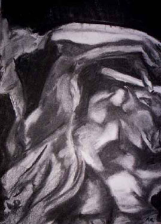

Les
fusains

Lire d'abord de préférence l'article du glossaire.
Anecdote : lire
L'histoire de l'inconnu aux fusains.
A lire également : Fusains,
fabrication artisanale in Courrier des Lecteurs.
Il existe deux catégories de fusains à ce jour :
1.
le fusain directement produit par la calcination de branches de
saules, dit "fusain végétal". Il est adapté à un travail
particulier. Contrairement au crayon et autres techniques, il autorise le
dessinateur à travailler par retraits sur une base volontairement noircie
presque intégralement plus que par
ajouts légers sur une surface laissée en bonne partie intacte. Plus il est tendre,
plus il rend aisé le retrait si le papier "accroche" bien.
Le dessinateur couvre largement la surface picturale de noir à l'aide de son fusain
puis fait apparaître des nuances de gris en effleurant le papier avec sa main,
un chiffon, un Sopalin ou un Kleenex, un tortillon, une estompe ou une gomme
mie de pain. L'aisance avec laquelle il est possible d'apporter de massives
corrections de valeurs est inimitable.

Les possibilités de cet outil très simple sont uniques. Les
ancêtres du fusain, de simples torches brûlées, ont été utilisées dès le
paléolithique et rares sont encore les artistes, aujourd'hui, qui dédaignent ce
très puissant moyen d'expression, certes amélioré (essences végétales plus
propices, formes éventuellement équarries, etc.). Certains disent que si la
peinture à l'huile est dans les arts plastiques ce que l'orchestre symphonique
représente pour la musique, le
fusain est l'équivalent du piano.
Son usage le plus mineur - quoique courant - est l'emploi pour les esquisses préparatoires à la réalisation de
tableaux (lire l'article sur le dessin
préparatoire).
Il existe également des emplois en techniques mixtes, notamment avec
l'aquarelle et les lavis.
Ci contre, une composition autour de 'La joueuse de flûte' de Camille
Claudel, un travail de la jeune Aude Rivard
qui met à profit une manière académique pour
réaliser une véritable composition
contemporaine sans concession à la joliesse. Le fusain est à la fois énergique et tempéré (ce qu'il sait si bien être),
il respecte et accompagne la complexité du bronze de Claudel.
2.
le fusain reconstitué, dit aussi "fusain compressé"
ou synthétique,
généralement fabriqué avec de la poudre de fusain "végétal". Il
se présente sous forme de cylindres semblables à des pastels ou sous forme de
crayons. Il est plus noir que le fusain "végétal" mais on ne peut
pas l'estomper et le retravailler aussi aisément. Il sert donc en premier lieu
à noircir les zones laissées trop grises par le fusain végétal. C'est, à ce
titre, un précieux outil de finition. En tant qu'outil employé pur, il permet
un travail d'estompe certes inférieur au fusain "végétal" mais bien
supérieur au crayon graphite.
>
Donc, simple en apparence, le dessin au fusain peut en fait mettre en oeuvre les
outils suivants :
* le fusain "végétal"
* la main, les tortillons et estompes, le chiffon
* la gomme mie de pain
* le fixatif
- sur la fixation spécifique du fusain à l'aide de résines naturelles, lire
ici un témoignage.
* le fusain compressé
* un papier éventuellement teinté (les grains
Ingres sont particulièrement conseillés, fabriqués à l'origine pour le
fusain, mais certains BFK Rives teintés peuvent aussi donner d'excellents
résultats ainsi que les vélins et
papiers pour
l'aquarelle 'gélatine à coeur' et autres)
* un pastel blanc ou à défaut un crayon blanc
"accrochant" bien.
Les manières de travailler sont diverses.
Assez souvent, le fusain "végétal" permettra la mise en place des
éléments, voire la mise au point définitive, mais pour ce travail, certains
artistes préfèrent le fusain "synthétique", parfois appliqué
après estompage au chiffon des points de repère posés avec l'élément
végétal. Mais dans la plupart des cas, le fusain synthétique ne servira qu'à
renforcer les noirs après une première fixation des éléments déjà très
travaillés avec le fusain végétal.
Par ailleurs, il est assez rare qu'un dessinateur recherche un fusain dur. Cette catégorie de
fusains a en effet tendance à marquer le papier de manière indélébile et
surtout rend difficile la couverture de vastes zones picturales. Cependant, il
faut bien reconnaître que certains travaux réalisés avec des fusains peu
tendres ne sont pas dépourvus d'intérêt esthétique, surtout dans une
approche gestuelle où la maltraitance du papier peut parfois prendre du sens.
Retour
début de page